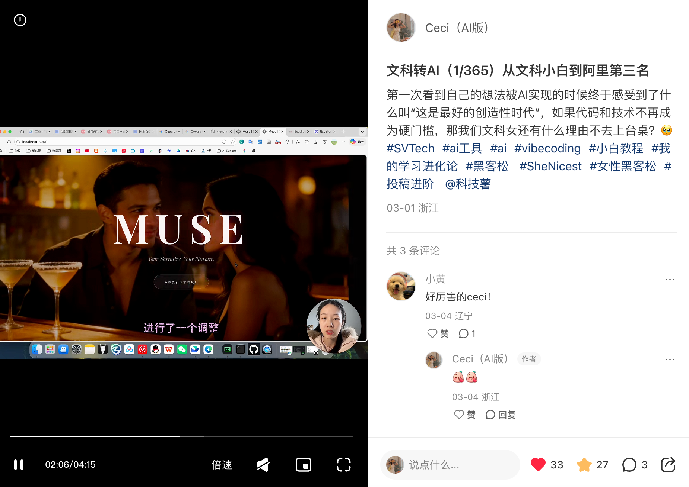
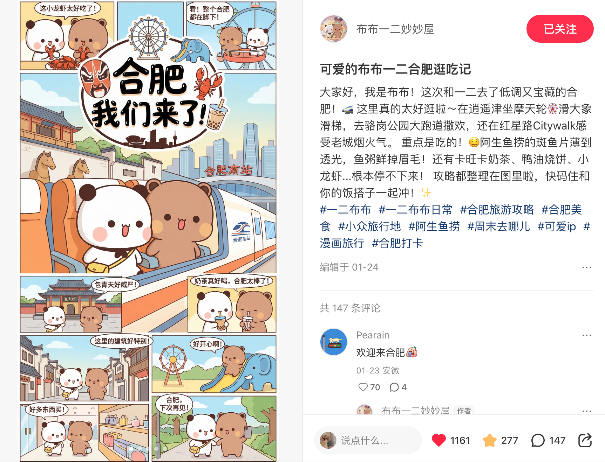

基础信息与教育背景
- 所在地
- 浙江杭州
- 求职方向
- AI 产品 / AI 运营 / AI 内容增长
- 教育背景
- 985 华中科技大学 外国语言学及应用语言学（硕士）
- 2022.09 - 2025.06
- 211 中国地质大学（武汉） 英语 + 工商管理双学位（本科）
- 2018.09 - 2022.06
- 综合排名
- 2 / 26
- 英语能力
- 雅思 7.0 / 专八良好
你好，我是 Ceci。一个非典型的跨界 Builder。👋
从字节跳动的数据驱动，到独立全栈开发 AI 应用，我始终在打破文与理的边界。我相信，在 AI 时代，算力和算法可以被量产，但对审美的坚持、对商业的嗅觉、以及对“人”的深度同理心，才是产品最不可替代的灵魂。
欢迎来到我的数字宇宙。
一个适合做 AI 产品、AI 内容与增长协同岗位的复合型候选人。
- Linus Torvalds
从 AI 应用、内容工具到增长账号，我把“能做出来”变成一组连续的证据。
定位：面向女性与性少数群体的沉浸式 AI 语音陪伴空间，强调自然表达、长文本记忆与情绪体验。
角色：Product Lead & 前端开发，独立完成需求定义、场景逻辑设计与 UI 落地，并推动接入 Qwen3-TTS-Flash 实现流式语音交互。
结果：作品获得阿里云极客创造者 48 小时黑客松季军（铜奖），也成为我进入 AI 产品语境的重要起点。
定位：把繁琐排版流程压缩成“一键生成高颜值图文卡片”的创作者工具。
角色：Solo Full-Stack Developer，基于 React/Next.js、Tailwind CSS 与 html2canvas 完成界面与批量导出，并接入 Gemini API 支持爆款改写。
结果：打通“灵感 - 改写 - 排版 - 导出”完整链路，让单篇图文制作效率显著提升。
定位：围绕爆款逻辑、结构化拆解和自动化工作流，打造的自媒体成文系统。
角色：AI Workflow 架构师 & 前端开发，提炼可复制的 Prompt 框架，并把复杂逻辑封装成更傻瓜式的双栏交互工具。
结果：为矩阵账号提供稳定选题与成文支持，帮助完成 3600+ 粉丝、1.5w+ 赞藏的冷启动突破。
定位：面向真实社交场景的约饭产品，让“和谁吃、吃什么、去哪吃”这类分散决策收束为一个完整流程。
角色：团队协作中的产品策划 / 体验设计 / 前端支持，参与发起约饭、邀请码加入与 AI 推荐模块的串联。
结果：把高频但零散的社交决策场景整理成更顺滑的移动端体验，目前处于内测推进阶段。
定位：围绕时间管理、任务拆解与复盘搭建的轻量系统，让执行和复盘真正落到每天的行为里。
角色：AI Workflow 设计者 / 内容转化者，把个人方法论封装成可展示、可传播、可复用的系统。
结果：把抽象经验转化为更具操作感的 AI 内容资产，也成为我转 AI 过程中的代表性方法论项目。
定位：聚焦 AI 入门经验、转行记录与陪伴式表达，让复杂工具更容易被普通用户理解。
角色：个人 IP 主理人 / 内容生产者 / 选题与增长实验者。
结果：账号积累 705 粉丝与 8869 获赞收藏，逐步形成“转 AI 陪伴型创作者”的清晰认知。
定位：通过更密集的选题测试与内容迭代，验证 AI 内容在平台上的传播反馈。
角色：账号主理人 / 内容策略制定者 / 冷启动操盘者。
结果：账号实现 3950 粉丝与 2.1 万获赞收藏，证明我具备从内容到增长的完整闭环能力。


真正让我具备执行力的，不只是项目本身，还有我在组织、增长和协作里反复练出来的推进能力。
AI 之外，我也用声音、运动和思考持续理解“人”这件事。这些兴趣不是附属品，而是我理解用户、保持感受力和长期行动力的来源。
INFJ 观察者 · 播客「二三Talk」主理人
我相信写作与对谈是最深度的社交。懂得倾听真实的人，更有可能做出真正懂人的产品。
羽毛球 3金3银 · 环太湖骑行者 · 网球杭州团队赛第三
赛场上的拼劲，和黑客松里死磕代码的韧性，本质上是同一种生命力。精力管理，是我持续执行的底层能力。
思考者 · 终身学习者
我想用极客的技术手段，承载人文的关怀与美感。把想象变成现实，也让现实尽量保留温度。
ceci@portfolio:~$ Try ceci.play_podcast(), ceci.show_medals() or ceci.open_manual()
如果你在寻找一个有表达力、有产品感、能快速进入 AI 场景并把事情做出来的人，我们可以聊聊。